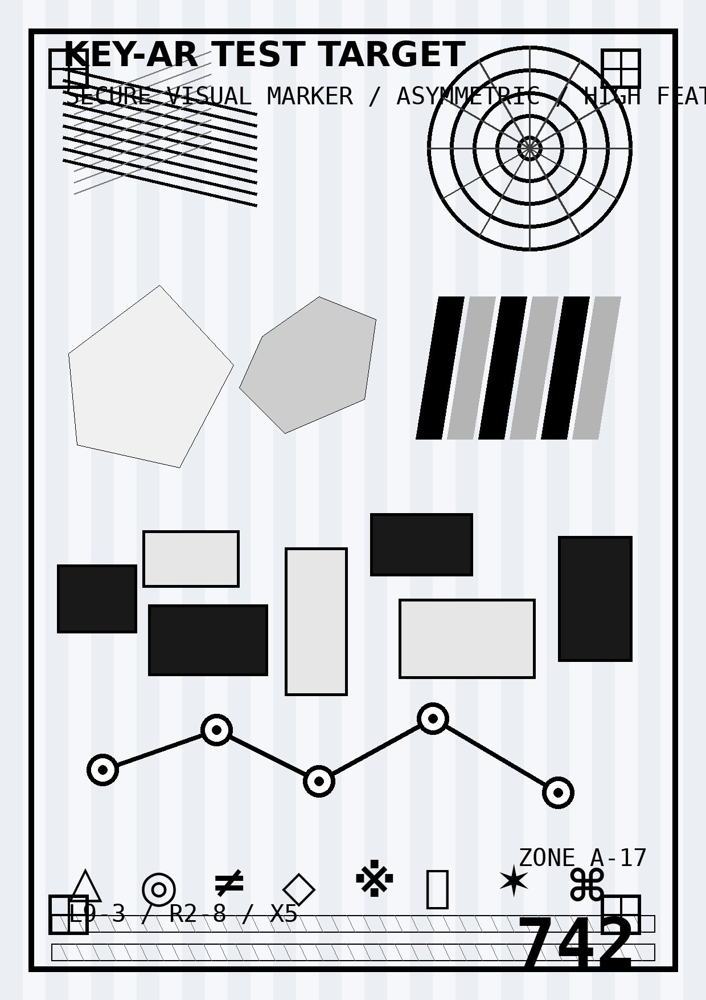

THE KEY / KEY LENS / PHASE 1-A
Alpha Recognition Target
이 이미지는 KEY LENS 구조 검증을 위한 임시 Target입니다. 최종 ROUND 1 문제 디자인이 아닙니다. PC 또는 다른 기기에 크게 띄운 뒤 휴대전화에서 key-lens.html을 실행해 비춰주세요.

이 이미지는 KEY LENS 구조 검증을 위한 임시 Target입니다. 최종 ROUND 1 문제 디자인이 아닙니다. PC 또는 다른 기기에 크게 띄운 뒤 휴대전화에서 key-lens.html을 실행해 비춰주세요.
